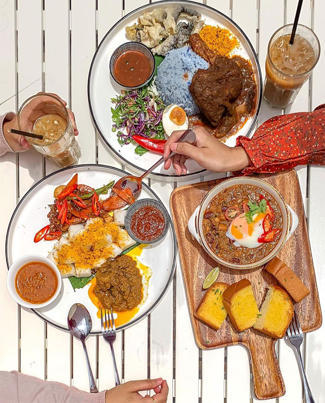

Welcome to Klang Valley Dining

About the Platform
At Klang Valley Dining, our purpose is to elevate your culinary journey by connecting you with the finest local eateries. We are built on core values of convenience, variety, and accessibility. Whether you are craving street food or fine dining, our goal is to provide a seamless and unforgettable dining experience from discovery to your final bite.
Who It Is For
Our platform is designed to cater to a diverse community of food lovers:
- Families: Find spacious, kid-friendly environments for weekend gatherings.
- Couples: Discover intimate, romantic spots for the perfect date night.
- Professionals: Locate efficient, high-quality eateries for business lunches or quick after-work meals.
- Tourists: Explore authentic, highly-rated local Malaysian cuisine with confidence.
What We Offer
We provide a comprehensive suite of services to make dining out effortless:
- Restaurant Discovery: Browse our curated list of top-tier restaurants complete with signature dishes, pricing, and vibrant descriptions.
- Personalized Recommendations: Unsure where to eat? Tell us your dietary preferences, budget, and dining purpose, and our smart engine will find the perfect match.
- Seamless Reservations: Secure your table instantly with our easy-to-use booking system and integrated deposit options.